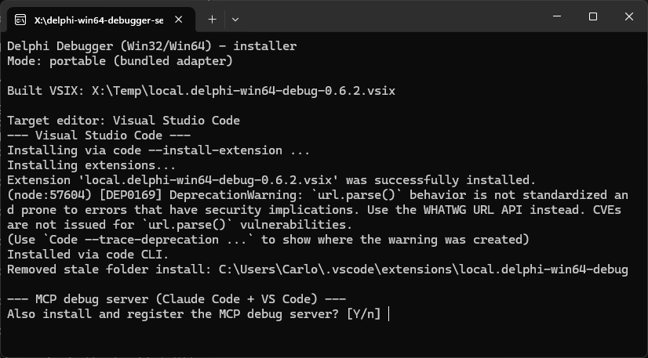
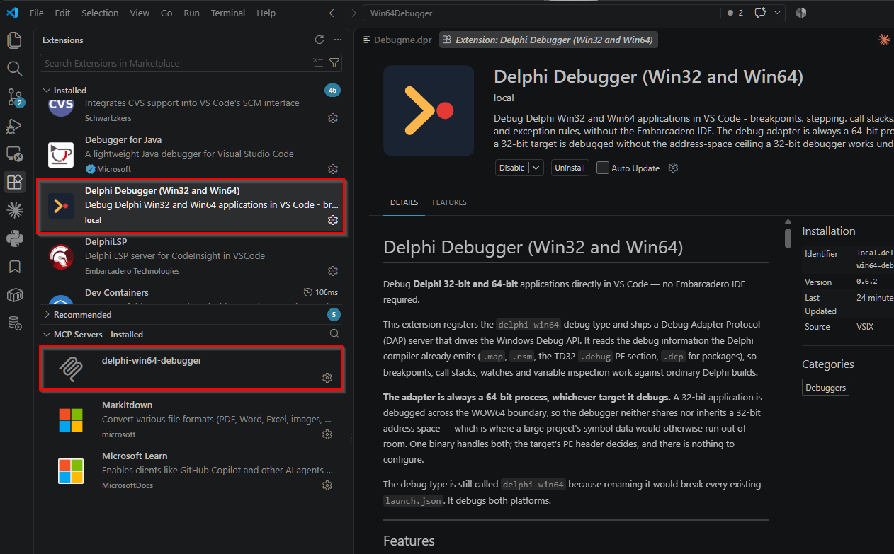
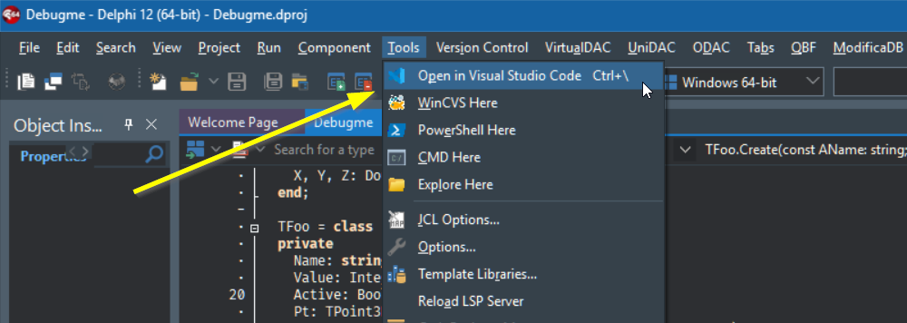

Getting started
If you only want to use the debugger, do not build anything. The release ships the debug adapter, the MCP server and the VS Code extension already compiled, and the installer puts all three where they belong. No Delphi toolchain is needed on the machine you install on — only on the machine that compiles the program you want to debug.
Important prerequisite
Today, a Delphi project only becomes a properly configured VS Code workspace through the Edit in VS Code Delphi IDE plugin. Treat it as required, not as a nice extra.
Nothing in VS Code can read a .dproj. Everything that makes your project
your project — the output directory for this platform and configuration, the
source root, the unit search paths accumulated over years, the BPL list on a package
project — lives in the Delphi IDE and has to be handed over. The plugin is what hands it
over.
That configuration is not only for debugging. It carries two things at once:
- Editing. This is what the plugin was originally built for, before this debugger existed. Without the generated configuration, DelphiLSP has no search paths, so code navigation, completion and Copilot are all working half-blind on a codebase they cannot resolve.
-
Debugging. The
launch.jsonand attach configurations this debugger needs, derived from the same project options. On a real project that is a few hundred entries.
On the roadmap: not requiring the Delphi IDE at all. There is a third-party extension, Delphi DevKit, that manages Delphi projects and compilers from inside VS Code — including generating the DelphiLSP configuration — without RAD Studio needing to be open. Interoperating with it, so this debugger can be configured from a workspace it set up, is planned. It is not supported yet; for now the plugin is the way.
Download
Grab delphi-win64-debugger-setup-*.zip from the
latest release
and extract it anywhere. The zip contains Setup.exe and the prebuilt binaries
it installs.
Install
Run Setup.exe. It detects the installed Visual Studio Code family editors,
installs the extension and the adapter, and updates an existing installation in place.
At the end it offers to register the MCP server as well.

Setup.exe mid-run: it has installed the extension into Visual Studio Code
and is asking whether to register the MCP debug server as well.
Setup.exe. Code signing certificates cost more per year than
this project will ever make, which is nothing. The source of everything in the zip is
on GitHub
if you would rather build it yourself.
Say yes to the MCP registration offer if you want an AI coding agent to be able to drive the debugger — that is what MCP & AI agents is about. It can also be done later, and undone; see Installing and registering the MCP server.
The extension is not on the Marketplace
The extension is delphi-win64-debug, publisher local, and it is
installed by the setup rather than pulled from the Visual Studio Marketplace. That is
deliberate: the same installer reaches Cursor, Windsurf, VSCodium and Trae through their
own extension paths, not only Microsoft's editor.
Installing from a source checkout
Only relevant if you are building the debugger yourself. Delphi 10.3 Rio or later is required to compile it.
| Method | When to use it |
|---|---|
install\Install.exe(built by build_installer.bat) |
The interactive installer, built from your own checkout. Same behaviour as the released Setup.exe: detects the editor installs, updates in place. |
install-dev.bat |
Development mode — points the extension straight at your build output, so a rebuild is picked up without reinstalling. |
| Manual copy | Copy package.json and the built executable into %USERPROFILE%\.vscode\extensions\local.delphi-win64-debug\. The fallback when the installer cannot find your editor. |
First run
Restart Visual Studio Code after installing, then check three things.
- The extension shows up in the Extensions view as installed and enabled.
-
A debug configuration of type
delphi-win64is offered — the label in the picker is Delphi (Win32/Win64). The type id isdelphi-win64regardless of the target bitness; it was never renamed when Win32 support shipped, so existing configurations keep working. -
Gutter breakpoints can be set in your
.pasfiles. The debugger claims theobjectpascalandpascallanguage ids, and breakpoints also work in files VS Code has typed asdelphi.

local, because it does not come from
the Marketplace — DelphiLSP beside it, and, if you accepted the
registration offer, delphi-win64-debugger under
MCP Servers. The details pane confirms the version you are running.
That is the debugger installed. Next comes getting your actual project in front of it, which is the other half.
Opening your project: the Edit in VS Code plugin
A Delphi project carries its configuration in the IDE: output directories per platform
and per configuration, unit search paths accumulated over years, and for a package
project the list of BPLs. VS Code knows none of it, and transcribing it into
launch.json by hand is not an afternoon anyone should spend.
The Edit in VS Code plugin reads it out of the project options you already have and writes the workspace for you — including both the launch and attach configurations this debugger uses. It is a separate project of the same author, and it is the piece that makes the debugger practical rather than merely possible.
Installing it
It is a design-time package: it installs into the Delphi IDE, the way components do — there is no setup program. If you have never installed a package before, the whole procedure is this:
-
Clone the repository into a folder of its own, and keep it — the IDE loads the package
from where you built it, so this is not a temp directory:
No git? The repository’s Code → Download ZIP button gets you the same files.git clone https://github.com/csm101/EditInVsCodeDelphiPlugin.git -
In Delphi, open
EditInVSCode.dpkfrom that folder (File → Open Project). - In the Project Manager pane, right-click the package → Install. Delphi compiles it and loads it into the IDE; a confirmation names the plugin it just registered. From now on it loads with the IDE — this is a one-time step.
- Turn on Tools → Options → Editor → Language → Delphi → Code Insight. DelphiLSP in VS Code needs it; without it you get the debugger but no code intelligence.
- Pick your hotkey under Tools → Options → Third Party → Edit in VS Code — the key that will flip you from Delphi to VS Code on the file you are editing.
-
Verify: open any
.pasin Delphi and run Tools → Edit in Visual Studio Code. VS Code must open on that same file. If it does, everything below is already working.
git pull in that folder,
reopen the package, right-click → Install again.
Using it
With the project you want to work on open in Delphi:
Tools → Edit in Visual Studio CodeThat single command does the whole round trip:
- saves everything you have modified in the IDE;
-
generates the workspace file,
launch.jsonandtasks.jsonfrom the active project or project group; - opens VS Code on the file you were editing, at the same line and column — not just on the folder;
- reuses an editor window already open on that workspace instead of stacking another.
From there, F5 starts a debug session against the configuration it just
wrote. That is the point at which
the tutorial becomes useful.
The menu entry also carries a keyboard shortcut, configurable per editor. Its settings live under Tools → Options → Third Party → Edit in VS Code, and it can drive Cursor, Windsurf, TRAE and VSCodium as well as VS Code itself — the menu entry changes name to match.
What to put under version control
| File | |
|---|---|
vscode-workspace-defaults.json |
Yes. It holds what the team shares — editor settings and recommended extensions. The plugin creates it with sensible defaults and never rewrites it, so edit it freely. See chapter 0 for what belongs in it and why. |
The generated .code-workspace |
No. It contains machine-specific paths and a per-developer debug configuration. It is regenerated on demand, so there is nothing to lose. |
Paths inside the generated configuration are written relative to the workspace wherever possible, so a configuration produced on your machine still works on a colleague’s, wherever they checked the project out.

Companion tooling
| Tool | Why |
|---|---|
| Edit in VS Code (Delphi IDE plugin) |
Effectively required. It is how your project gets into VS Code with a working debug configuration — covered in full above. You can write launch.json by hand instead, and chapter 1 shows the minimum, but on a real project you will not enjoy it. |
DelphiLSPembarcaderotechnologies.delphilsp |
Delphi language support in VS Code — syntax, autocomplete. A separate Embarcadero extension; this one only debugs. |
Hex Editorms-vscode.hexeditor |
No longer needed. The extension ships its own memory view; the stock pane is only relevant if you turn delphi-win64.stockMemoryView back on. See Registers, memory and disassembly. |
| Delphi 10.3 Rio or later | Needed to build the debugger from source, and to compile the program you want to debug. |
Staying up to date
The extension checks GitHub releases once a day. When a newer version exists you get a notification offering two things: Download, which opens the release page, and Skip this version, which silences that particular version for good — useful when you have decided to stay where you are. It fails silently when the machine is offline or behind a proxy: no error, no repeated prompting.
Turn it off entirely with delphi-win64.checkForUpdates — the full settings
list is in the
settings and commands reference.
Updating is the same operation as installing: run the new Setup.exe, it
replaces the previous version in place.